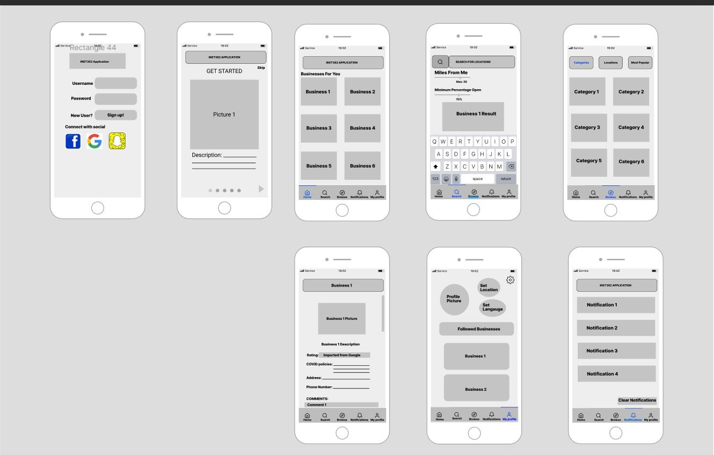

WattsOpen

Personalize Theme
You can change the color of the home page by
clicking the buttons!
About Me
I am a software developer who loves coding and building personal projects
You can change the color of the home page by
clicking the buttons!
I am a software developer who loves coding and building personal projects
WattsOpen is a application An application designed to make finding businesses’ opening policies easy
Covid-19 has led to the closing of many entertainment locations including theaters, escape rooms, mini-golfing, and more. In some places, these entertainment locations open up with COVID-19 precautions and guidelines only to close back down several weeks later. Due to this, it becomes difficult to keep track of which places are open and which aren’t. Furthermore, the lack of revenue for these entertainment places means that they may have shut down temporarily or permanently. With people having to stay at home and keeping their distance from others, the toll on everyone’s mental health is increasing. Entertainment is one way to bring joy to one’s life and the pandemic has either prevented this from happening or has greatly impeded it. Therefore, our application can bring joy to our users because it lets users know which entertainment locations are open during the Pandemic. It also makes searching for business information less stressful, and a lot more effective. Our research with users showed us that keeping up with business information can be stressful, and our application is aimed to reduce this stress.
This application has more value than Google Maps because all the information will be housed in one place. In Google there are a lot of missing information and it forces the user to call specific businesses to get more information. Our application stops that because we are able have all the data housed in one source. This allows the users to get all the information they need without having to forage for all of their information. Furthermore, our push notification setting allows users to get directly notified when the businesses they follow update their policies. This means that user-tailored COVID updates are sent directly to the users phone. Lastly, the forum section allows users to read other costumers comments on the business, which could be helpful if the business hasn’t posted the specific information needed.
COVID-19 has led to the closing of many entertainment locations including theaters, escape rooms, mini-golfing, and more. In some places, these entertainment locations open up with COVID-19 precautions and guidelines only to close back down several weeks later. Due to this, it becomes difficult to keep track of which places are open and which aren’t. Furthermore, the lack of revenue for these entertainment places means that they may have shut down temporarily or permanently. With people having to stay at home and keeping their distance from others, the toll on everyone’s mental health is increasing. Entertainment is one way to bring joy to one’s life and the pandemic has either prevented this from happening or has greatly impeded it. The entertainment locations we are looking into are movies, concerts, sports, bars, arcades, mini-golf, etc. It is important to note that this is not an all exhaustive list and we will use collected data to help narrow or broaden or focus. This app will assist not only customers in finding things places to go, but support the business owners and workers working hard to keep their businesses open and safe.
Given the pandemic that we are living in, many people still want to have some sort of normalcy. With the need for normalcy in mind, finding which entertainment locations are open to the public is a priority. Our research focused on designing an application that would make finding entertainment a more seamless experience to bring joy to our users.
We designed our product with the intention of getting as much use out of it during COVD-19 times and regulations. However, after feedback, design adjustments, many meetings, and more, it seems as if our product can be utilized in a time of COVID-19 and beyond.
In particular, our product is for users who want to be able to enjoy entertainment and see their available options in a time of COVID-19. No one wants to be stuck in their house by themselves, but people also want to keep themselves and others safe and also know what they are getting into wherever they go. This product is for people who want to get out there and do things and for people who want to understand all their options and all entertainment situations. Our app product is a one stop app for all COVID-19 entertainment needs. It provides businesses that are open or closed, it provides rules and regulations of said businesses, it allows you to contact those businesses, it allows you to leave and see reviews of these businesses, it allows you to get real time updates and notifications, it allows you to make reservations if applicable, and much more. Our product is really for anyone who enjoys entertainment outside of their home, as it provides all businesses in your area. People of all genders, ages, races, and ethnicities can utilize our app, because it is very inclusive and provides a broad range of businesses and entertainment.
Our product meets our user needs, because it allows you to do everything you need to in one place. There are other sites where you can leave/read reviews, find rules and regulations, see what is open and not, and much more, but our app does it all in one app with ease. You do not need to visit additional sites, outsourced services, or question if the information is up to date. Our product ensures real time updates and allows you to do all that you need to do with just a few clicks of a button, with great simplicity.
The main method we used for gathering data for our prototype is contextual enquiries. Contextual Enquiries are interviews for designers to understand the context of users. Contextual Enquires are broken down into five categories of Activities, Environments, Interactions, Objects, and Users. Our team used contextual enquires with three users being interviewed per team member. Since the team consists of five members in total we had fifteen contextual enquiries. In those fifteen contextual enquiries, we were able to understand what the users’ context is in terms of who they are as a user, their environment preferences, the interactions they do on a daily basis, the objects they use in their environment, and finally their daily activities.
After we gathered the contextual enquires, to understand and differentiate the fifteen contextual enquires, we used the Empathy Map. The Empathy Map comprises of four categories: Says, Does, Thinks, and Feels. These four categories were used to differentiate each contextual enquiry making it more easier for us to understand the user itself.
We then incorporated ideas from the Empathy Map and implemented into the Low Fidelity Prototype also known as Lo-Fi Prototype. This prototype is essentially a draft of what our application would like. In terms of creation we used Figma. In Figma we used components from the Lo-Fi Wireframe and images from google to make up the overall design of the Lo-Fi Prototype. We also designed different screens users will see when interacting with our application.
In our Lo-Fi Prototype, we have six screens that user will be looking at: Home, Browse, Search, Business, Notifications, and Profile.
The Home screen is where the users can see all the businesses they followed.
The Search screen is where users can search up any specific Business they are interested in.
The Business screen showcases a specific Business where their Covid-19 Opening policies, information about their business, and comments from the customers about their business.
The Browse screen is where the users can search up different businesses they are interested in learning about in terms of COVID-19 Policies and other users’ experience. This screen has three sections within it: Categories, Locations, and Most Popular.
The Notifications screen allows users to see the different notifications from the businesses that the user follows.
The Profile screen allows user to see the businesses they follow, set their location, and the settings.
In order to get feedback we met with another design team in our studio. We did this by sharing the video with them and answering questions and taking into consideration some of their thoughts and critiques.
The other design team’s suggestions were to add a login screen, create a quick tutorial for new users, elaborate on a rating system, add a language functionality for users that prefer to speak other languages besides English, and finally add more filters in the search screen.
Based on the feedback given, we decided to create a Login screen, Tutorial Screen, implement more filters in the search screen, and incorporate Google Business ratings in our application.
The Login screen is for users to be able sign into our application with their username and password. If the user is new then they can tap the Sign up button and go to the Tutorial we created for them.
The Tutorial screen where new users can learn what each feature our application is composed of.
The filters we added in our Search screen are the radius of miles closest to the users’ location and the opening capacity of the Businesses.
Due to the Pandemic there were many limitations in user testing but through online ingenuity we were able to overcome these limitations. For User Testing we did through virtual means and in person. In Figma there is a functionality where you can link the screens so that when you click on a button, the user would be redirected to another screen. For virtual interviews, we used screen share technology in Discord or Zoom allowing the team to see what the user is doing when they are interacting with the Lo-Fi Prototype. For in person testing, laptops were used to test the Lo-Fi prototype making it easier to observe the user’s interactions.
In order to develop a hi-fi prototype from our lo-fi prototype, our main task was to make our application clickable. This involved building frames in Figma which could link to one another, so that it gives the experience of being interactive. Conceptually, most of our tasks and features of the app stayed the same. For example, having a recommendation page, searching, and browsing. The majority of the hi-fi development involved working out the specific implementations of our features, and solidifying some of the nuts and bolts of these features. One example is the extensive settings page we developed, which incorporates suggested settings that our users were interested in, such as changing languages. Another design decision was to separate a business’s information from its comments, to keep those two pieces of data separate. In our final hi-fi, there is a comments button on the business page which takes you to its forum.

Once we had a working, interactive prototype, we worked with recruited users to gain additional feedback on what could be improved. These users complete tasks that we selected in order for us to gauge the difficulty and intuitiveness of these tasks. Probably the biggest piece of feedback was to add a back button into our application. We found that users got frustrated when they had to start at the main root window and go through the same pages again, not being able to simply go backwards.
Testing our prototype with users was extremely helpful, and is generally a good idea for design teams. The reason it is important is that these users are the ones who are going to be using the application, and the only way to accurately tell if they will be able to figure everything out is to observe them trying to do so. Working within an application for a long time can make it hard for the designers to see themselves as someone new looking at the app for the first time, so it’s imperative to get that outside feedback.
Finally, we also used TA feedback on our prototype to finalize some of our design decisions for the final, submitted prototype.
This website was built using the Wordpress framework.
The link to the website is found: here